En este tema, aprenderemos como utilizar módulos de interruptor. Los módulos de interruptor que veremos son el de choque, el de inclinación y el de golpe o vibración.
(1) x Placa Arduino
(1) x Módulo Interruptor de Choque
(1) x Módulo Interruptor de Inclinación
(1) x Módulo Interruptor de Golpe o Vibración
(3) x M H cables (cables de macho a hembra)
El componente que presentamos a continuación es sensible a impactos mecánicos, el módulo interruptor de choque.
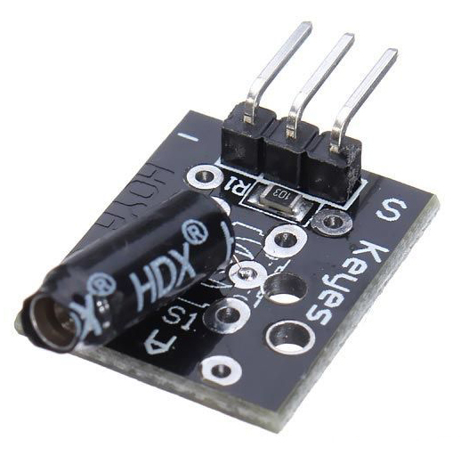
Sus fundamentos nos permitirán implementar a nuestro robot de capacidad de evaluar terremotos, el oleaje que
soporta nuestra embarcación, o simplemente las vibraciones que soportamos cada vez que pasa un maquinaria
pesada cerca nuestra.
Este tipo de sensores fundamentalmente montan un sensor mecánico de muelle. Su interior básicamente consiste
en un muelle basculante, como podemos ver en la siguiente imagen.
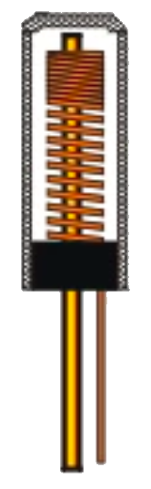
Al montarse en el módulo y recibe un impacto mecánico, cierra un circuito de alimentación que es capaz de
detectar nuestro Arduino.
El funcionamiento es bien sencillo, tan pronto se ejerce una fuerza sobre el dispositivo, los dos
terminales, el interior y el muelle exterior, se unen cerrando el circuito, volviendo a su posición de
reposo tan pronto la fuerza haya desaparecido, dejando de nuevo los dos terminales sin tocarse en circuito
abierto.
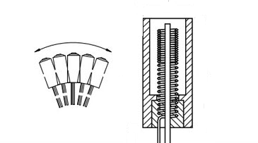
Al ser un mecanismo simétrico responde igual a la vibración independientemente de la dirección de la que
provenga.
En otras configuraciones, podemos encontrarnos que la caña central se sustituye por un tubo exterior, de
modo que el circuito se cierra cuando el muelle choca contra la pared interior del tubo.
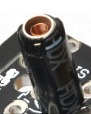
El módulo interruptor de inclinación es un interruptor que reacciona al movimiento. Cierra el circuito cuando se inclina hacia un lado siempre y cuando se mueva con suficiente fuerza y grado de inclinación para activar el interruptor de bola del interior.
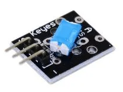
El funcionamiento del sensor de inclinación lo vimos en uno de los temas anteriores.
El módulo interruptor de golpe es un sensor de vibración que envía una señal cuando se detecta un golpe.
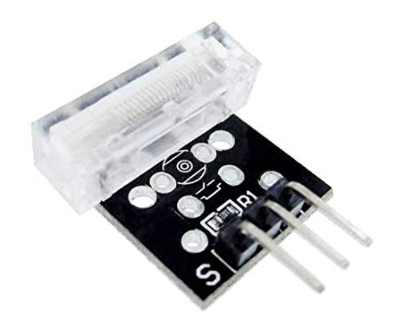
Este módulo consta de un sensor con resorte. El resorte emite una señal alta cuando se detecta una vibración.
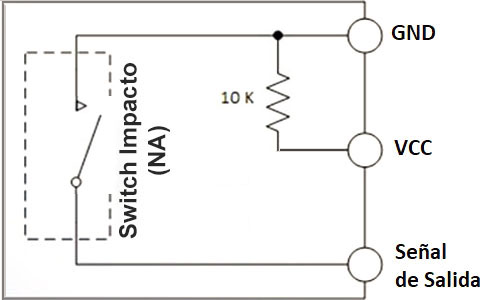
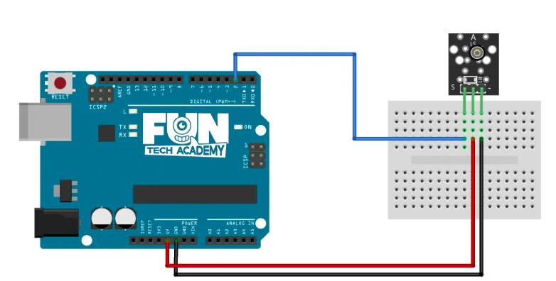
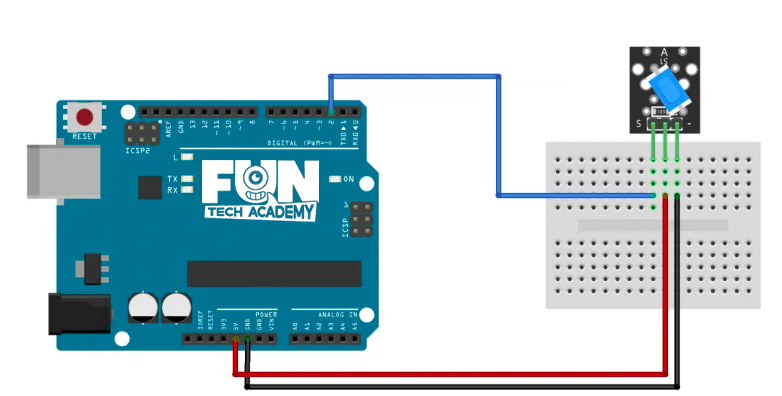
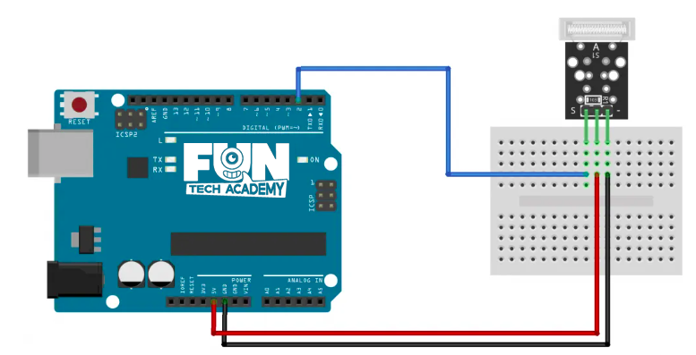
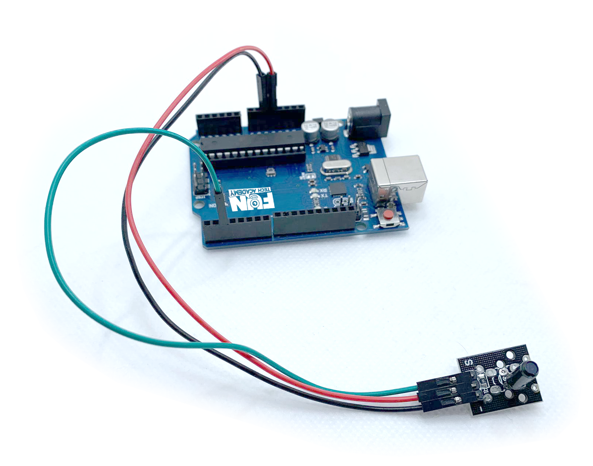
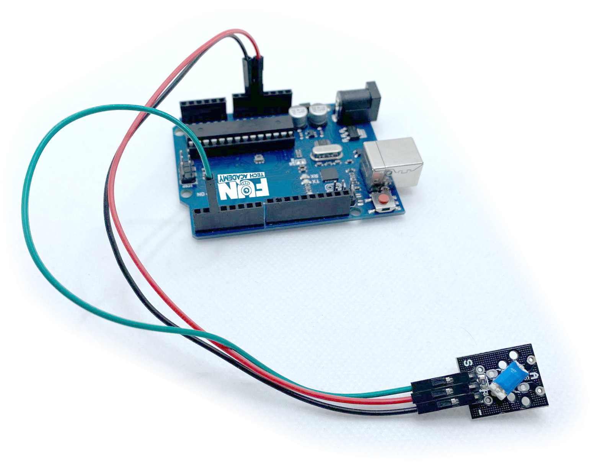
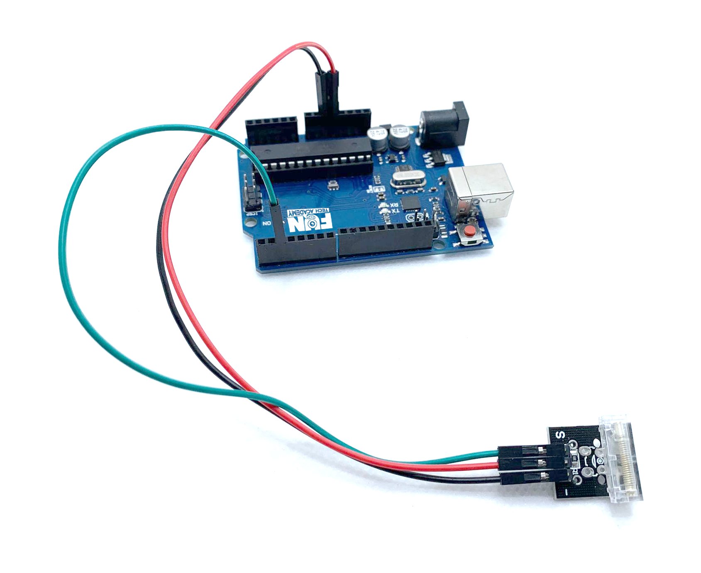
Vamos a realizar el mismo ejemplo con los tres módulos.
Una vez efectuado todo el cableado, descargaremos el script del siguiente
enlace y lo cargaremos como hemos
aprendido.
En el ejemplo vemos cómo al accionar cada uno de los módulos de interruptor, nuestro led de la placa se
enciende.
Para nuestro reto, lo que vamos a simular es un cofre que se abrirá con una contraseña.

Esta contraseña la introduciremos mediante golpecitos en la mesa. Al generar la secuencia correcta de golpes,
nuestro cofre se abrirá.
El cofre podemos simularlo con un motor o servo que girará hacia un sentido, esperará un tiempo y volverá
a girar en sentido contrario hasta la posición inicial. Podemos elegir el módulo que mejor se adapte al reto
de los tres vistos.